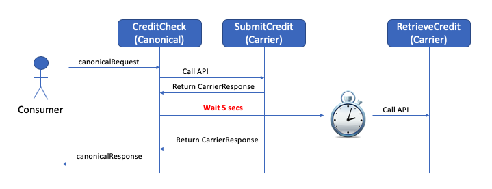
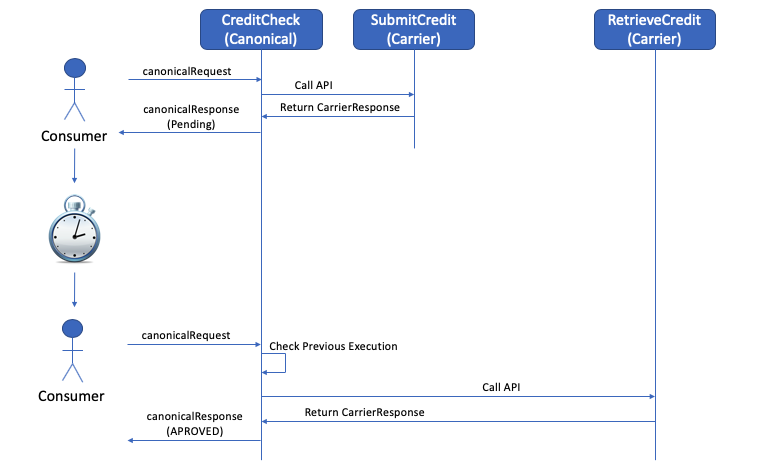

Demo
SPI ENCRYPTION
- ESB CHANGES.
- PAM FEATURE TOGGLE VALIDATIONS.
Problem Description
Sensitive Personal Information (SPI) fields are being enhanced to be able to receive encrypted values.PAM and ESB must be adjusted in order to support this requirement
"The encryption technique to be used is RSA."
SPI ENCRYPTION FLOW

ESB CHANGES
Supporting Submit/Retrieve Credit in separate calls
CURRENT CREDITCHECK BEHAVIOR
But then Verizon asked to increase the wait time to 30 little seconds.
NEW CREDITCHECK BEHAVIOR
- The first time CreditCheck is called SubmitCredit carrier API will be called and PAM will return status PENDING
- The consumer will need to make a second CreditCheck call
- Then for the second call CreditCheck executes RetrieveCredit carrier API and PAM will return the new status accordingly to the carrier response (In a happy path scenario it would be APPROVED)
NEW CREDITCHECK BEHAVIOR
LET'S SEE THE CODE
PAM FEATURE TOGGLE VALIDATIONS
Supporting Submit/Retrieve Credit in separate calls
CURRENT CREDITCHECK BEHAVIOR
But then Verizon asked to increase the wait time to 30 little seconds.
NEW CREDITCHECK BEHAVIOR
- The first time CreditCheck is called SubmitCredit carrier API will be called and PAM will return status PENDING
- The consumer will need to make a second CreditCheck call
- Then for the second call CreditCheck executes RetrieveCredit carrier API and PAM will return the new status accordingly to the carrier response (In a happy path scenario it would be APPROVED)